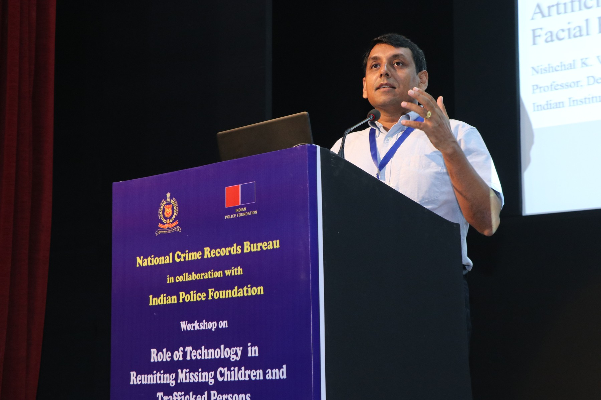

!! Dr. Nishchal K Verma (SM'13) is a Professor in Department of Electrical Engineering and Inter-disciplinary Program in Cognitive Science at Indian Institute of Technology Kanpur, India. He obtained his PhD in Electrical Engineering from Indian Institute of Technology Delhi, India. He is an awardee of Devendra Shukla Young Faculty Research Fellowship by Indian Institute of Technology Kanpur, India for year 2013-16.Dr. Verma works in Artificial Intelligence (AI) related theories and its practical applications to many inter-disciplinary domains but not limited to machine learning, deep learning, computer vision, prognosis and health management, bioinformatics, cyber physical systems/ internet of things, complex and highly non-linear systems modelling, clustering, and classifications, etc. He has published 200+ research paper including 54 Journals (IEEE-25, IET-3, Elsevier-2, Others-24), 161 Conferences (IEEE-104, Springer-23, Others-34), 3 Book Chapters, 2 Books (edited/ authored), 1 Patent(s) in the field of AI. He has successfully completed 23 projects (2862 Lakhs) from various funding agencies such as The BOEING Company, USA, DST, DRDO, JCBCAT, MHRD, SERB, CSIR, IIT Kanpur, MCIT, SFTIG, VTOL (Sponsored: 19 of 2324 Lakhs and Consultancy: 4 of 538 Lakhs). He has 15+ years of experience in the field of AI. He has been serving as Associate Editor/ Editorial Board Member of various reputed journals and conferences which include IEEE Transactions on Neural Networks and Learning Systems, IEEE Computational Intelligence Magazine, and Editor, IEEE Access. He has also developed several AI related key technologies for The BOEING Company, USA and organized AI related workshops, conferences, seminars, short term courses, etc. !!